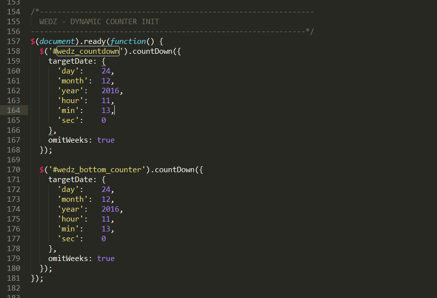
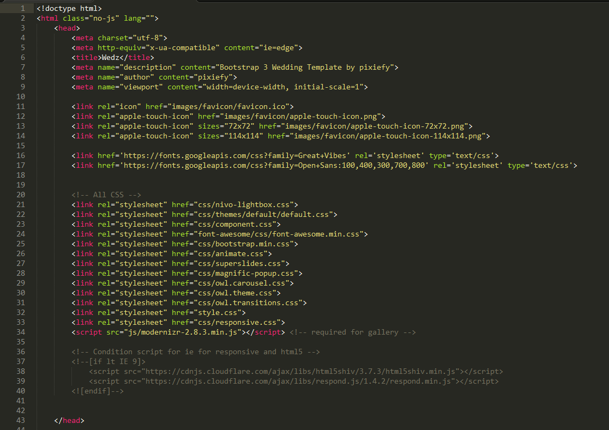
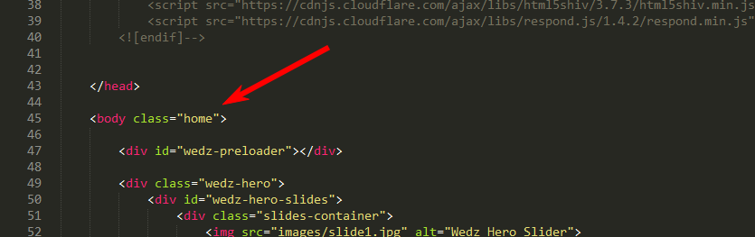
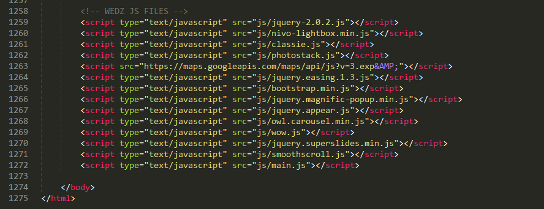
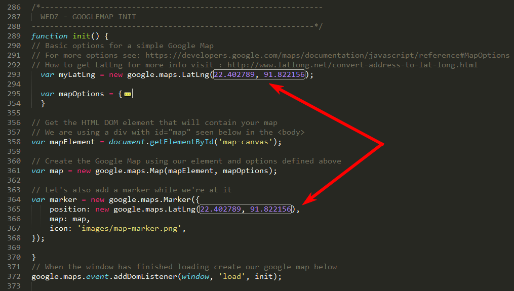
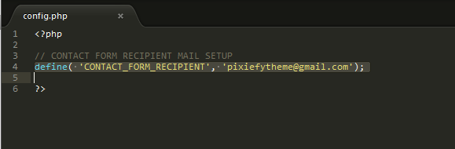
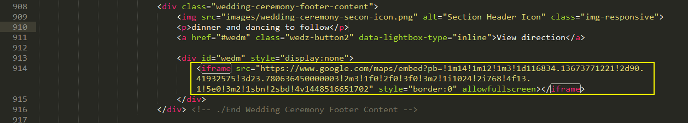

Created: 28/February/2015
By: PixiefyThemes
Email: pixiefytheme@gmail.com
Thank you for purchasing my template. If you have any questions that are beyond the scope of this help file, please feel free to email me via my user page contact form. Thanks so much!
To chage countdowntimer go to main.js file inside js folder. Go to line number 155 ( or find WEDZ - DYNAMIC COUNTER INIT - comments ) . After find that script section change your desire date for more info please visit http://www.littlewebthings.com/projects/countdown/
When you download our files you will see we used placholder image instead original those we used in our preview link. To change with your desire image replace with image src to placeholder image and if you having any problem to where you have to use image to see our live preview and get idea http://pixiefy.com/themes/wedz/
This template is based on a responsive and full screen layout. And it's built using HTML5 standard.
index.html.
From beginning of the "< body >" tag till the ending "< body />" tag, all the codes and texts are used for the Template structure. You can change any text from the template by navigating through the index.html file and localizing each line of text you want to change.
The < head > contains the template title, favicon, font links and all the stylesheets it needs. We used two google fonts "OpenSans" and "Dosis".
We used Font Awesome for icons, animate.css for css animatons, owl slider css for owl, superslider css for main slider, componet for gallery and Responsive css styles are in responsive.css inside css folder.
The < body > contains all the contents of the template. From the beginning, Every section has different comment.
NOTE:Home page body has a class name with "home"
At the footer we used jquery-2.0.2 version, my custom scripts and all the necessary plugin JavaScripts depending on the variations.
style.css - Main stylesheet which includes all the styles of the template. It is located in the root folder of the template. and all other css file contain the css folder
You can change the colors and the template styles by changing the css files in template root.
If you would like to edit a specific section of the site, simply find the appropriate label in the CSS file, and then scroll down until you find the appropriate style that needs to be edited.
All our javascript file are contain in js folder and also some of script are in footer for specific reason
To change the google map location to your preferred location change in the main.js file inside js folder. Go to line number 262 - 348 ( or find WEDZ GOOGLEMAP INIT - comments ) and change the location latitude and longitude. My personal recommendation is http://www.latlong.net/convert-address-to-lat-long.html to convers address to latitude and longitude
and also you can change your desire address from google map marker. see in screenshots. To set up the contact form to send emails with the persons which are contacting you to your desire email addres, open "php/config.php" file and change the email from line 4 with your own email.
define( 'CONTACT_FORM_RECIPIENT', 'example@email.net');
To receive emails, the entire template needs to be uploaded to a server which supports either PHP4 or PHP5.
To setup google map iframe please visit www.google.com/maps and create your owl map and grab the iframe code from googlep map and paste in here
Once again, thank you so much for purchasing this template. As I said at the beginning, I'd be glad to help you if you have any questions relating to this template.
PixiefyThemes.com